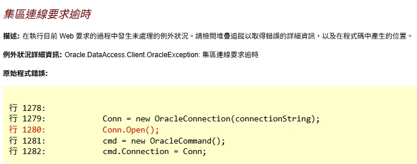

Oracle 連線字串與連接池設定優化
最近系統出現「集區連線要求逾時」錯誤，無法正常連接 Oracle 資料庫。經過測試與調整連接池參數後解決問題。
問題發現
系統運作時出現連線錯誤：

錯誤訊息：Oracle.DataAccess.Client.OracleException: 集區連線要求逾時
可能原因推測
- 連線數超過預設上限
- Session 累積過多
- 連線逾時設定太短
- 連線未正確釋放
連線字串設定對比
原始連線字串
<add name="MyDB" |
說明：
- Oracle ODP.NET 預設就會啟用連接池，即使沒有明確寫出參數
providerName="Oracle.DataAccess.Client"是 Oracle 官方 .NET 資料存取元件（ODP.NET）
優化後連線字串
<add name="MyDB" |
連接池參數說明
| 參數 | 預設值 | 自訂值 | 說明 |
|---|---|---|---|
| Pooling | true | true | 啟用連接池（重用連線，避免每次重新建立） |
| Min Pool Size | 1 | 1 | 連接池最少保留幾條連線 |
| Max Pool Size | 100 | 150 | 連接池最多允許幾條連線 |
| Connection Lifetime | 0 | 300 | 連線存活時間（秒），0=永不過期 |
| Connection Timeout | 15 | 30 | 建立連線最多等待時間（秒） |
| Incr Pool Size | 5 | 5 | 每次擴展增加幾條連線 |
| Decr Pool Size | 1 | 1 | 每次縮減減少幾條連線 |
連接池運作流程：
請求來了 → 從池中取得連線 → 使用完畢放回池中 → 下次請求重用 |
測試
為確認連接池功能是否真的存在，以及參數設定是否會生效，將 Max Pool Size 改 1：
Max Pool Size=1 |
結果：系統立即掛掉，出現一樣的區連線要求逾時
結論：證明連接池確實存在、參數設定有效
解決方案
改善重點：
Max Pool Size=150增加連線數上限Connection Lifetime=300每 5 分鐘重建連線，防止 session 累積Connection Timeout=30增加等待時間，降低逾時風險
修改 Web.config 連線字串 → 重啟 IIS → 系統高峰不再出現區連線要求逾時
小結
- 在不更動程式碼，調整連線字串參數也能初步改善連線問題
- Oracle ODP.NET 預設就會啟用連接池，但建議明確設定參數避免依賴預設值
- 透過測試驗證問題點，再調整對應參數